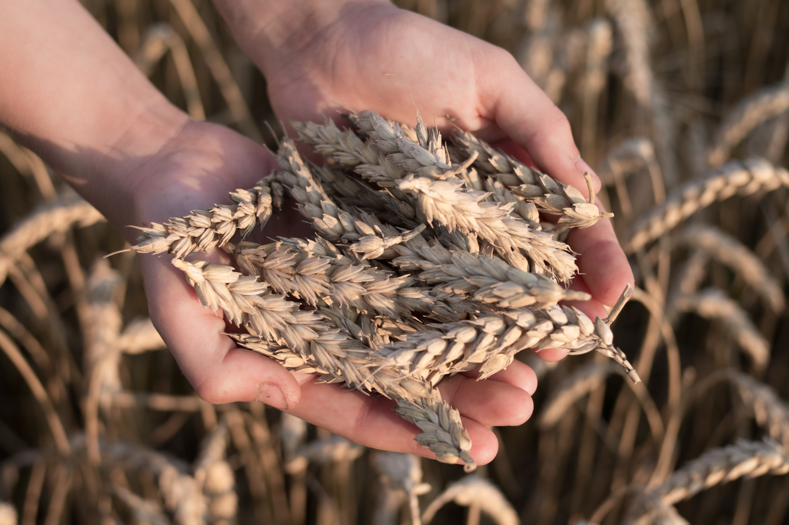

Shirley's Grape-nut Pudding

Ingredients
- Grape-nuts- 1 cup
- Milk- 4 cups
- Eggs- 4
- Sugar- 1 cup
- Vanilla- 2 teaspoons
- Cinnamon- pinch if desired- optional
Instructions
- Preheat oven to 350 degrees.
- Scald milk by heating it up until skin forms on top.
- Add sugar and Grape-nuts to milk.
- Temper the eggs by slowly adding about 1 cup of hot milk to eggs while whisking. This prevents you from making scrambled eggs.
- Stir the egg/milk mixture back into the scalded milk.
- Add vanilla (and cinnamon if desired).
- Pour into buttered casserole.
- Bain Marie the casserole dish by placing it inside another larger casserole dish filed half-way with boiling or hot water.
- Bake at 350 Degrees until set, around 30-45 minutes.
- Stir pudding halfway through the bake to prevent separation of the Grape-nuts and custard in the final dish.
- A knife inserted into the center should come out clean when done.